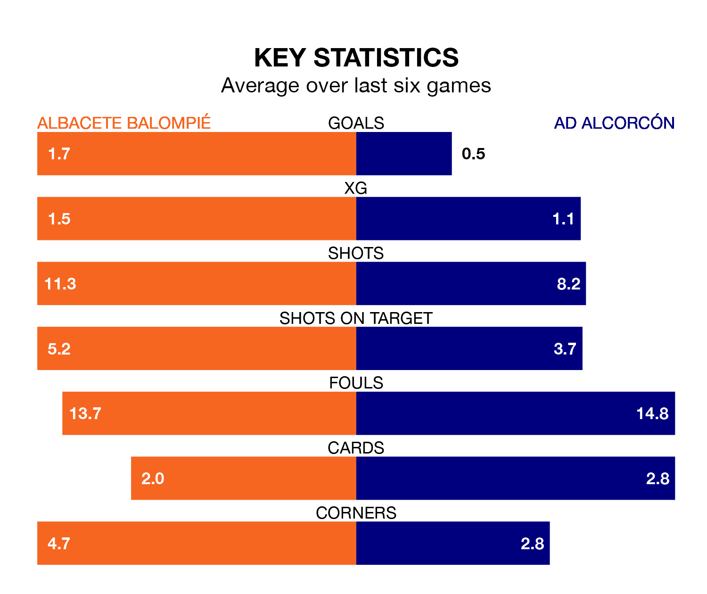

Albacete Balompié are heavy favourites to keep all three points at home in Saturday lunchtime's kick-off against AD Alcorcón.
Albacete, who sit 16th in the Segunda División with 22 games played, are priced at 1.6 to seal victory at the Estadio Carlos Belmonte.
Sitting four places and four points behind them in the table, Alcorcón are 5.4 to win with *Betting Company*, while the draw is at 3.8.
In the last 10 years, Albacete and Alcorcón have played each other on 13 occasions. Albacete won seven of them, Alcorcón five, and they drew once.
On average, Albacete scored 1.2 goals and Alcorcón 1.1 in those matches.
Their last meeting was on October 3, when Albacete won 2-1 away.
With 19 goals in 22 games so far this season, Alcorcón are the league's joint-third-lowest scorers with 0.9 goals per game. And they are conceding more than average, letting in 33 goals at a rate of 1.5 per game.
Albacete, meanwhile, are average scorers, with 1.2 goals per game. They have conceded 1.5 goals per game.
The hosts are in mixed form in the Segunda División, with two wins and a draw from their last six games.
And also with two wins and a draw over that period, the away side's form is identical – they have both taken seven points from 18.
Albacete's last match was on Saturday, a 3-2 loss against Levante UD, with Andrés Fernández (own goal) and Juan Manuel García García getting the goals for Albacete.
Alcorcón drew 0-0 with Mirandés last time out, also on January 13.
Updated: 06:13 (UTC), 18/01/24